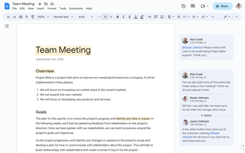
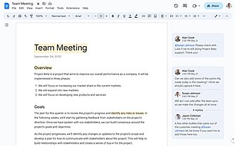
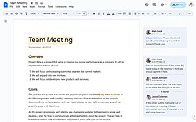

Google Docs
Source: https://en.wikipedia.org/wiki/Google_Docs
Category: products_consumer
Depth: 1
Summary
Google Docs is an online word processor and part of the free, web-based Google Docs Editors suite offered by Google. Google Docs is accessible via a web browser as a web-based application and is also available as a mobile app on Android and iOS and as a desktop application on Google's ChromeOS.
Images



Full Article
Cloud-based word processing software
This article is about the word processor. For the office suite, see Google Docs Editors.
Google Docs is an online word processor and part of the free, web-based Google Docs Editors suite offered by Google. Google Docs is accessible via a web browser as a web-based application and is also available as a mobile app on Android and iOS and as a desktop application on Google's ChromeOS.
Google Docs allows users to create, edit and write documents online (Stories, Meeting notes, ETC) while collaborating with users in real-time. Edits are tracked by the user making the edit, with a revision history presenting changes. An editor's position is highlighted with an editor-specific color and cursor, and a permissions system regulates what users can do. Updates have introduced features using machine learning, including "Explore", offering search results based on the contents of a document, and "Action items", allowing users to assign tasks to other users.
Google Docs supports opening and saving documents in the standard OpenDocument format as well as in Rich Text Format, plain Unicode text, zipped HTML, and Microsoft Word. Exporting to PDF and EPUB formats is implemented. Google Docs now also supports downloading files in Markdown format.
History
Google Docs originated from Writely, a web-based word processor created by the software company Upstartle and launched in August 2005. It began as an experiment by programmers Sam Schillace, Steve Newman, and Claudia Carpenter, trying out the then-new Ajax technology and the "ContentEditable" HTML feature. On March 9, 2006, Google announced that it had acquired Upstartle. Google would release a new product, based on Writely, called Google documents on October 10, 2006. In July 2009, Google dropped the beta testing status from Google Docs. In March 2010, Google acquired DocVerse, an online document collaboration company. DocVerse allowed multiple users to collaborate online on Microsoft Word documents, like other Microsoft Office formats, such as Excel and PowerPoint. Improvements based on DocVerse were announced and deployed in April 2010. In June 2012, Google acquired Quickoffice, a freeware proprietary productivity suite for mobile devices. In October 2012, Google renamed the Google Drive products, and Google Documents became Google Docs. At the same time, Google Chrome App versions of Google Docs, Google Sheets, and Google Slides were released, which provided shortcuts to the service on Chrome's new tab page. In February 2019, Google announced grammar suggestions in Docs, expanding their spell check using machine translation techniques to help catch tricky grammatical errors. In March 2023, Google Docs, with Slides and Sheets, introduced a new UI theme.
Platforms
Google Docs is available as a web application supported on Google Chrome, Firefox, Microsoft Edge, and Safari web browsers. Users can access all Docs, as well as other files, collectively through the Google Drive website. In June 2014, Google rolled out a dedicated website homepage for Docs that contains only files created with the service. In 2014, Google launched a dedicated mobile app for Docs on the Android and iOS mobile operating systems. The mobile website for Docs was updated in 2015 with a "simpler, more uniform" interface, and while users can read files through the mobile websites, users trying to edit will be redirected towards the dedicated mobile app, thus preventing editing on the mobile web.
Features
Editing
Collaboration and revision history
Google Docs and the other apps in the Google Drive suite serve as a tool for collaborative editing of documents in real time. Documents can be shared, opened, and edited by multiple users simultaneously, and users can see character-by-character changes as other collaborators make edits. Changes are automatically saved to Google's servers, and a revision history is automatically kept so past edits may be viewed and reverted. To resolve concurrent edits from different users, Google Docs uses an operational transformation method based on the Jupiter algorithm, where the document is stored as a list of changes.
An editor's current position is represented with an editor-specific color/cursor, so if another editor happens to be viewing that part of the document, they can see edits as they occur. A sidebar chat functionality allows collaborators to discuss edits. The revision history allows users to see the additions made to a document, with each author distinguished by color. Only adjacent revisions can be compared, and users cannot control how frequently revisions are saved. Files can be exported to a user's local computer in a variety of formats (ODF, HTML, PDF, RTF, Text, Office Open XML).
Explore
In March 2013, Google introduced add-ons, new tools from third-party developers that add more features to Google Docs. To view and edit documents offline on a computer, users need to use the Google Chrome web browser. A Chrome extension, Google Docs Offline, allows users to enable offline support for Docs files on the Google Drive website. The Android and iOS apps natively support offline editing.
In June 2014, Google introduced "Suggested edits" in Google Docs; as part of the "commenting access" permission, participants can come up with suggestions for edits that the author can accept or reject, in contrast to full editing ability. In October 2016, Google announced "Action items" for Docs. If a user writes phrases such as "Ryan to follow up on the keynote script", the service will intelligently assign that action to "Ryan". Google states this will make it easier for other collaborators to see which person is responsible for what task. When a user visits Google Drive, Docs, Sheets, or Slides, any files with tasks assigned to them will be highlighted with a badge.
A basic research tool was introduced in 2012. This was expanded into "Explore" in September 2016, which has additional functionality through machine learning. In Google Docs, Explore shows relevant Google search results based on information in the document, simplifying information gathering. Users can also mark specific document text, press Explore, and see search results based on the marked text only.
In December 2016, Google introduced a quick citations feature to Google Docs. The quick citation tool allows users to "insert citations as footnotes with the click of a button" on the web through the Explore feature introduced in September. The citation feature also marked the launch of the Explore functionalities in G Suite for Education accounts.
Files
Supported file formats
- For formatted text documents: OpenDocument, Rich text format, zipped HTML, Unicode plain text, Microsoft Word.
File limits
Limits to insertable file sizes, overall document length, and size are listed below:
- Up to 1.02 million characters, regardless of the number of pages or font size. Document files converted to .gdoc (Docs) format cannot be larger than 50 MB. Images inserted cannot be larger than 50 MB and must be in either .jpg, .png, or .gif formats.
Google Workspace
Google Docs and the Google Docs Editors suite are free of charge for use by individuals but are also available as part of Google's business-centered Google Workspace, enabling additional business-focused functionality on payment of a monthly subscription.
Other functionality
A simple find-and-replace tool is available. Google offers an extension for the Google Chrome web browser called Office editing for Docs, Sheets and Slides that enables users to view and edit Microsoft Word documents on Google Chrome via the Docs app. The extension can be used for opening Office files stored on the computer using Chrome, as well as for opening Office files encountered on the web (in the form of email attachments, web search results, etc.) without having to download them. The extension is installed on ChromeOS by default. Google Cloud Connect was a plug-in for Microsoft Office 2003, 2007, and 2010 that could automatically store and synchronize any Word document to Google Docs (before the introduction of Drive) in Google Docs or Microsoft Office formats. The online copy was automatically updated each time the Microsoft Word document was saved. Microsoft Word documents could be edited offline and synchronized later when online. Google Cloud Connect maintained previous Microsoft Word document versions and allowed multiple users to collaborate by working on the same document at the same time. Google Cloud Connect was discontinued in April 2013 as, according to Google, Google Drive achieves all of the above tasks, "with better results".
In January 2022, Google announced the text watermark feature to the word processor, allowing users to create or import watermarks to a document. In addition to text watermarks, image watermarks can also be added to the document.
In July 2024, Google announced that Google Docs would begin fully supporting Markdown syntax. This built on Google's announcement in March 2022 that it had added an opt-in feature to automatically detect Markdown within Google Docs.
Reception
In a December 2016 review of Google Docs and the Drive software suite, Edward Mendelsohn of PC Magazine wrote that the suite was "visually elegant" with "effortless collaboration", but that Docs, as paired with Sheets and Slides, was "less powerful than desktop-based suites". Comparing Google's Office suite with Microsoft Office and Apple's iWork, he stated that "Docs exists only in your Web browser", meaning that users have a "more limited feature set" than "the spacious, high-powered setting of a desktop app". He wrote that offline support required a plug-in, describing it as "less convenient than a desktop app, and you have to remember to install it before you need it". Mendelsohn praised the user interface, describing it as "elegant, highly usable" with "fast performance", and that the revision history "alerts you to recent changes, and stores fine-grained records of revisions". Regarding the Explore functionality, he credited it for being the "niftiest new feature" in the suite and that it surpassed comparable features in Microsoft Office. He described the quality of imports of Word files as "impressive fidelity". He summarized by praising Docs and the Drive suite for having "the best balance of speed and power, and the best collaboration features, too", while noting that "it lacks a few features offered by Microsoft Office 365, but it was also faster to load and save in our testing".
Issues
2017 phishing incident
In May 2017, a phishing attack impersonated a Google Docs sharing email spread on the Internet. The attack sent emails pretending to be someone the target knew, requesting to share a document with them. Once the link in the email was pressed, users were directed to a real Google account permissions page where the phishing software, a third-party app named "Google Docs", requested access to the user's Google account. Once granted, the software received access to the user's Gmail messages and address book and sent new fraudulent document invitations to their contacts. The phishing attack was described by media outlets as "massive" and "widespread", and The Next Web's Napier Lopez wrote that it's "very easy to fall for". One of the reasons the attack was so effective was that its email messages passed through spam and security software, and used a real Google address. Within hours, the attack was stopped and fixed by Google, with a spokesperson stating "We have taken action to protect users against an email impersonating Google Docs and have disabled offending accounts. We've removed the fake pages, pushed updates through Safe Browsing, and our abuse team is working to prevent this kind of spoofing from happening again".
On the same day, Google updated Gmail on Android to feature protection from phishing attacks. Media outlets noticed that, while the added protection was announced on the same day as the attack, it "may not have prevented this week's attack, however, as that attack involved a malicious and fake 'Google Docs' app that was hosted on Google's own domain". In early May 2017, Ars Technica reported that "at least three security researchers" had raised issues about the threat, one of them in October 2011, and that the attacker or attackers behind the actual incident "may have copied the technique from a proof of concept posted by one security researcher to GitHub in February". Furthermore, the report noted that Google had been repeatedly warned by researchers about the potential threat, with security researcher Greg Carson telling Ars Technica that "I don't think Google fully understood how severely this could be abused, but certainly, hackers did".
2017 "Terms of Service" error
In October 2017, Google released a server-side update to its codebase, which started incorrectly flagging random documents as unspecified violations of its "Terms of Service" policies. A fix was released shortly afterward, though the issue became noteworthy for the extent of Google's control over users' content, including its analysis of the contents of documents, as well as for its ability to shut users out at any time, including during critical moments of work.
Notes
References
External links
| - v - t - e Word processor programs | |
|---|---|
| - List - Comparison - of early word processor programs | |
| Open-source | - AbiWord - Apache OpenOffice Writer - Bean (up to v. 2.x) - Calligra Words - Collabora Online Writer - Docs - GNU TeXmacs - LibreOffice Writer - LyX - Ted - TextEdit |
| Freeware | - Adobe Buzzword - Atlantis Nova - Bean (since v. 3.x) - Jarte (standard) - TextMaker (2008) |
| Commercial | |
| Discontinued | - 1st Word - Apple Writer - AppleWorks - Atari Word Processor - AtariWriter - Bank Street Writer - ChiWriter - Cut & Paste - davka writer - Electric Pencil - The First XLEnt Word Processor - IBM Lotus Symphony - KWord - MacWrite - Magic Desk - MultiMate - PaperClip - Perfect Writer - Scripsit - SpeedScript - Sprint - WordPad - WordStar - Writer - StarOffice - OpenOffice.org - Go-oo - NeoOffice |
| Hardware | - AlphaSmart - CPT Corporation - Friden Flexowriter - IBM Displaywriter System - IBM MT/ST - Wang |
| - Category:Word processors |
| - v - t - e Google | |
|---|---|
| a subsidiary of Alphabet | |
| Company | |
| Development | |
| Software | |
| Hardware | |
| - v - t - e Litigation | |
| Related | |
| Italics denote discontinued products. - Category - Outline |